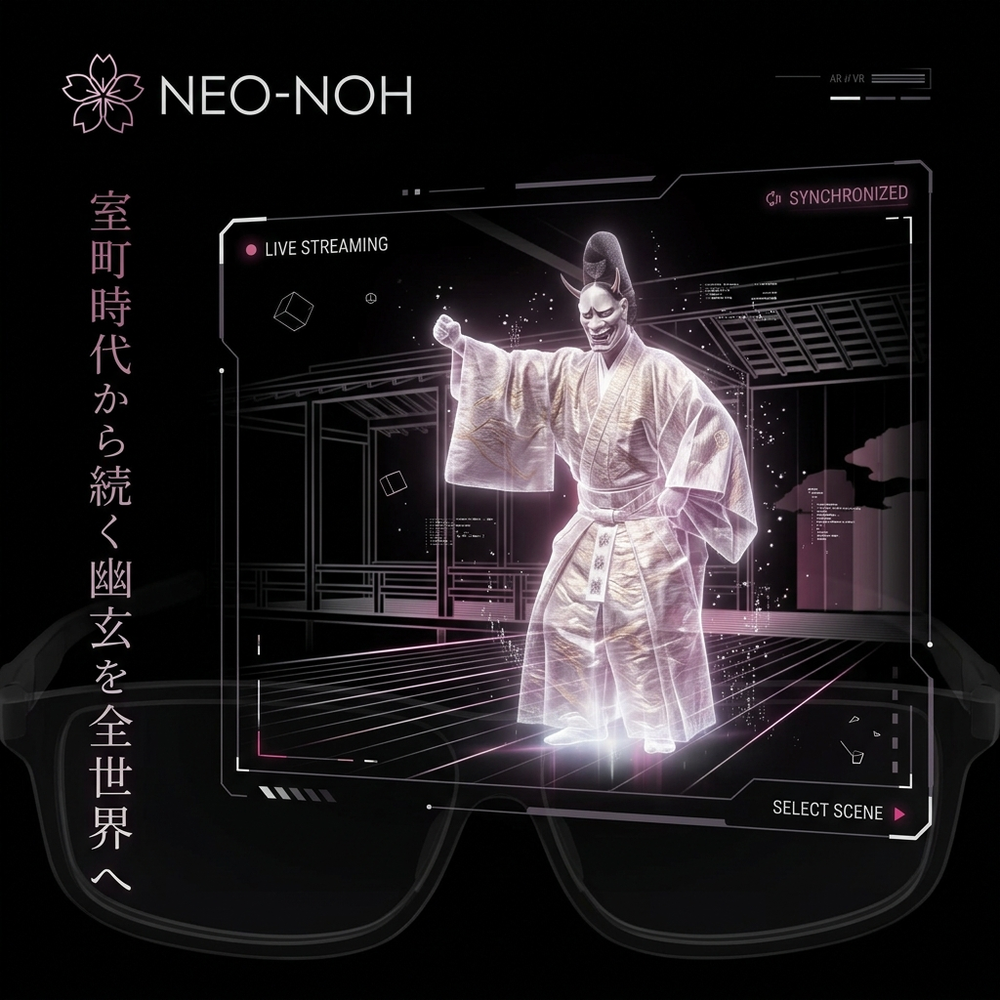

室町時代から続く幽玄を、
全世界の「空間」へ。
600年の歴史を持つ世界最古の舞台芸術「能（NOH）」。その幽玄の美を、リアルタイムのボリュメトリックキャプチャとAR/VR技術で空間ごとデジタル化。世界中のリビングルームに、本物の能楽師をホログラムで召喚するプラットフォーム「NEO-NOH」。

物理的制約に縛られた「伝統」の解放
能楽堂という限られた空間、限られた座席。本物の能を体験できる人は世界でもごく僅かです。平面の映像配信では決して伝わらない「舞の立体感」と「面（おもて）が落とす影の美しさ」。NEO-NOHは、空間コンピューティングによって伝統芸能のアウラ（纏うオーラ）を完全再現します。
狂気の解像度を実現するテクノロジー
超高精細リアルタイム3Dキャプチャ
能楽堂に設置された100台以上の特殊カメラが、演者の動き、装束の絹の光沢、扇の角度まで、空間ごとミリ単位でリアルタイムに3Dデータ化。
AI空間音響（Spatial Audio）
囃子方の鼓の音響や、地謡の重低音。あなたの部屋の音響特性をデバイスが瞬時にマッピングし、国立能楽堂の神聖な音の反響を部屋全体にシミュレート。
インタラクティブな「幽玄」エフェクト
ただの録画ではありません。演目の世界観（桜の吹雪や、怨霊の妖気など）が、AR機能によってあなたの部屋の家具や壁に浸食するデジタル演出を付加。
あらゆる角度から「芸の真髄」を解剖する
劇場では正面からしか見られません。しかしNEO-NOHでは、演者の背後から摺り足の軌跡を見たり、真上から舞台全体のフォーメーションを確認したり、さらには「演者自身の視点」に乗り移って能舞台から観客席を見渡すことも可能です。
多言語AIリアルタイム解説システム
能の難解なストーリーや古語の台詞も、もう壁にはなりません。AIが演目の進行に合わせて、空間上に美しくタイポグラフィ化された現代語訳や英語の字幕をホログラム表示。背景の歴史や「型」の意味を、視線を送るだけでポップアップ解説します。
The Experience | 葵上（Aoi no Ue）
あなたが自室のソファでスマートグラスをかけると、床一面が総檜の舞台へと変化。目の前数十センチの距離で、般若の面をつけた六条御息所の怨霊が舞い狂う。その圧倒的な実在感と迫力に、世界中のユーザーが畏怖の念を抱きます。
日本の魂を、メタバースの基幹コンテンツへ
アニメやゲームに続く、日本発の最強のグローバル・コンテンツは「伝統芸能」です。私たちは600年続く美意識を最先端のテクノロジーでパッケージングし、世界規模のバーチャル経済圏へと解き放ちます。